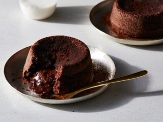

Chocolate Lava Cake
by James Martin
A messy but delicous chocolate treat!
Ingredients✨
3 chocolate bars
1/3 cup milk
1/8 cup cream
200 ml of powdered sugar
3 eggs
1 1/2 cup of flour
8 tbsp of butter or 1/3 cup oil
2 tbsp of cocoa extract
Steps✨
- In a medium bowl, mix all your dry ingredients together (sugar and flour).
- In a seperate mixing bowl mix all your wet ingredients (milk, cream, eggs, oil/butter and cocoa extract).
- Mix dry and wet mixes together thouroughly + preheat oven to 325 degrees farenheit.
- Pour mix into your pan, lined with baking sheets and put in the oven and bake for 20 minutes.
- Take out and carve a medium sized hole on the top, from that hole scoop out some cake inside, save the piece of cake you cut
- Fill the hole you just made with peices of your chocolate bar.
- Put the piece of cake you cut off back on top and put cake back in the oven for another 5-10 .